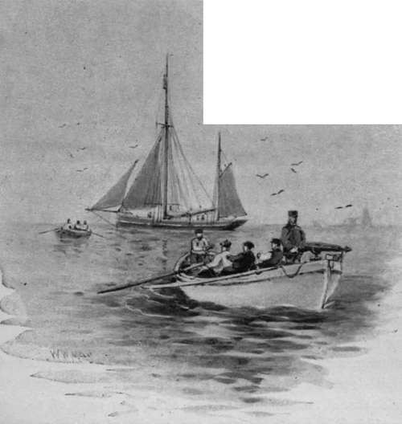
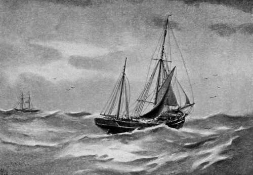

The Bottlenose (Hyperoodon Rostratus)
Description
This section is from the book "Sea Fishing", by John Bickerdyke. Also available from Amazon: Sea Fishing.
The Bottlenose (Hyperoodon Rostratus)
The name Bottlenose given to these whales is derived from the peculiar shape of their head and mouth, which is extremely like that of a huge bird. They generally go either singly, in pairs, or in bunches of from three to seven, and, unlike the Greenland whale, are extremely inquisitive, rising close to a ship, even a steamer when her screw is in motion, and playing all round her. On a calm day, from the ' crow's nest' or the rigging, you can sometimes see them under water, lying on their backs gazing up at the ship. They run from twenty to thirty feet long, and on an average yield about a ton of blubber, which is called ' Arctic Sperm.' It is said that the valuable part is the refuse of the blubber after the oil has been extracted. Out of the heads of the fish we caught in 1884, when 'flensing,' we took several bottles of pure oil which we found extremely good for burns.
There would appear to be two sorts—one a larger and light-coloured, nicknamed by the whalers ' Chaney Johns '; the other, smaller in size and darker in colour. The Scotch whalers were the first to capture these fish, in the year 1877 ; but not many were taken until 1881, when 111 were brought home, and in 1883 the number increased to 403. They are principally found from Cape Farewell in Greenland, to Iceland, Jan Mayen, and Bear Island, and they seem to keep on certain banks where jelly fish abound. Some whalers assert that these constitute their food. They are said never to enter the ice ; so that any year in which the pack lies very far to the east, covering their usual feeding grounds, will generally turn out a good season for them, as a ship lying off and on to the ice will be in a good position to meet them going north along the edge of the pack. The end of April, May and June appear to be the months when most fish are taken, as they are rarely seen after the first days of July.
In 1883 the price of the oil was about 65 l. per ton, and this, paying very well, induced the Scotch whaling ports and the Norwegians to fit out a number of ships for the ensuing year, consisting of vessels of all sizes, from schooners to the ordinary whaler. To give an idea of the number employed, we, leaving Lerwick on May 7, 1884, in my yacht Kara, took out letters for about twenty British ships to North Greenland, as the fishing grounds from Iceland to Spitzbergen are termed by the whalers. These fish are taken much in the same way as the Greenland whale, except that the gun harpoon is alone used, their motions, as a rule, being too quick for a hand harpoon.
There is not the same risk attached to their capture, for their tails are not the formidable weapons wielded by the former fish, indeed the writer does not recollect a single instance in which a fish injured the boat with her tail; but they take line rapidly, and care must be used that the boat is not dragged down. Smaller boats, containing five men and four lines, are also employed for their capture. They generally roll something like porpoises, head, back fin, and tail appearing in succession, though at times they will play on the top of the water, and occasionally sail majestically round the ship. The writer once saw seven ' Chaney Johns ' pass round the ship nearly in line, at a slow pace, blowing like so many locomotives leaving an engine shed.
The usual mode of capture is either to dodge slowly about where the water is the proper colour (a darkish blue, almost black in appearance), and the moment fish are seen, heave to and drop a couple of boats, placing one somewhere ahead of the ship, and the other astern ; or heave to, and leave a boat or two on the bran ; if fish are detected at a distance the boats row off in their direction and remain perfectly still about the spot where they last appeared.
If a fish is fastened, all the boats are sent away and placed round the ' fast boat,' as at first, at any rate, the other fish do not seem to take alarm, which often gives the chance of fastening two or three more. For a day or two after you have killed a fish they even seem to come more frequently near the ship than at other times. We always saw more fish before a breeze of wind and as it moderated than at other times. This was most aggravating to us, for, being a small ship, the swell used often to be too heavy for us to lower away. They take line with extreme rapidity at times ; indeed, two of the fish the writer fastened took three lines in what appeared to be about three minutes. The first, a fish of about twenty-three feet, eventually took out 5 1/4 lines (1,280 yards), and was hauled up dead in two hours and a half; the second, about twenty-six feet long, took 6 1/2 lines (1,560 yards), and, receiving a second harpoon, was lanced in about two hours and three-quarters.
The Boats Row Off.
There is a story of a harpooneer fastening a fish alongside the ship. Before a boat could be lowered to his assistance the whole of his lines disappeared over the bow, and were never seen again. Sometimes a ' Bottley,' as the whalers term them, gives a good deal of trouble in course of capture. We once saw a ship with all her boats from six in the morning until long after noon killing one fish.
Fog, which is very prevalent in North Greenland, is one of the great dangers in this fishing, as the following anecdote will show. The boats of the Chieftain, a three-masted schooner, fastened a very strong fish when the fog came down thick, enveloping the four boats that were killing the fish. The ship lost the boats, and, a sudden breeze springing up, the men cut the lines and made for the ice, which was not far off. Three of them were fortunately picked up by other vessels ; but the fourth reached the ' pack,' and, remaining there until the gale abated, made for Iceland along the cant of the ice, reaching it in a pitiable state, one or two of the crew having died of exposure, and others having to suffer amputation for frostbites. It was a bitter cold gale, ropes and everything were frozen. As well as we could make out this all happened within ten miles from where we were at the time.
We had a rather amusing episode on our voyage home to Lerwick when about a hundred miles from Shetland. About 6 a.m. I was awakened by the mate coming into the main cabin, and from my berth I hailed to know what was the matter. The mate reported the ship was running, with a light breeze on her quarter, under all plain sail and a balloon jib ; also that ' three of them Bottleys had come along' ; and as I had arranged to try to drop a hand harpoon into any fish that might be near enough, he had come down to pass the end of the lines up from the line room to attach to a line which had been coiled in a tub on deck for this purpose. When we started for Lerwick the lines had been coiled down, as they came out of the boats, in the line room, which stands just forward of the stove in the main cabin.
In Pursuit Of The Boats.
I jumped out of bed and helped the mate to tie up the two skylights and pass the end of the line on deck ; but, thinking Bottleys down in these latitudes a myth, I returned to my bunk, and was almost asleep, when I was aroused by the noise of the line running, and a yell of ' A fall ! a fall !'
The position was extremely ludicrous, for my friend and companion Mr. Grant in the berth opposite was shut in by the line-room door, which, being made of bars of wood, gave him the appearance of a wild beast at the Zoo, as, aroused by the cry, he jumped hastily out of his bunk ; but I was in no better position, for there was not time to put on any clothes, and owing to the weather being extremely fine, there having seemed little chance of my services as skipper being required suddenly on deck, I had retired to rest undressed.
In the meantime the line on deck was running merrily, and any moment we might expect the lines to begin to run from the line room ; however, by this time, the steward, Kilgallon, appeared out of the pantry, much more respectable than his master, and the mate had rejoined us ; so, directing them where to stand, I took up a position in the door of my berth, and prepared to do my best to keep the line clear of the cabin furniture.
There was not long to wait before the line started, and the fish still running at a considerable pace, the line flew out in great coils, the utmost activity being required to prevent the stove or some other useful article of furniture from being caught and carried out through the skylight.
The fish did not run much over two lines, and when she slacked a bit I got into some clothes, and, leaving one hand to watch the line, moved on deck, where I found Mr. Crowther (who is now away in the Windward with the Jackson-Harms-worth expedition to Franz Joseph's Land as ice-master) holding the line with one hand and putting on his trousers with the other.
It appeared that Valentine, the second harpooneer, had got out to the end of the bowsprit and cleverly dropped the harpoon into the fish as she passed under him. Jimmy Macmillan, one of the boat-steerers, had run the line with two turns at first, but finding it was likely to take fire, he had to take one turn off; and as the line was going a great pace, he kept looking aft to see whether it would fetch anything out of the cabin.
The ship was all aback, so, having lowered down the sails, we hoisted out a boat, and, putting a line and a hand harpoon in her, soon got up to the fish. A second harpoon was put into her when hanging her up to the bows of the boat; I then despatched her with a lance, but very nearly got a ducking, as I somehow held the lance awkwardly, and was swung clean out of the boat by the struggles of the fish ; however, maintaining the grasp of the lance, and allowing myself to swing like a pendulum, the return swing brought me safely back into the boat.
The cook had the greatest difficulty in rousing the watch below when a fall was called ; he could not make them believe a fish was fastened, we were so many miles from the fishing grounds. It is doubtful if a fish has ever been killed so near our shores.
Bottlenose oil fell to 25 l. per ton that year, and now hardly any but Norwegians follow this fishing. The fish also have become very scarce.
Before concluding this part of the chapter on Whaling, the writer wishes to thank Messrs. Robert Kidd & Co., of Peterhead, for their assistance. If any readers care to try whaling, they cannot do better than get the advice and aid of these gentlemen.
Continue to:
Tags
fishing, hooks, bait, fishermen, spanish mackerel, mackerel fishing